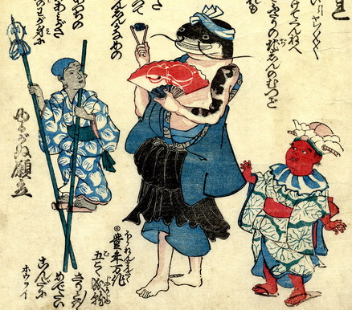

願人坊主の扮装をして、右手に銭錫杖、左手に扇子を持った鯰がちょぼくれ節をうたっている。鯰の体は人間のもので、腕には刺青がある。その右側に肌が赤く、閻魔の扮装をした子供が歩いている。着物の柄は蓮の葉。左側に肌が墨色で額に白毫のある地蔵のような子供が竹馬に乗っている。竹馬の一方は、先に錫杖がついている。着物の柄は蓮の花びら。
出典：親書誌：U426_nichibunken_0163：ちょぼくれちょんがれ；チョボクレチョンガレ／日付：2010／資源識別子：U426_nichibunken_0163_0001_0000
Copyright (c)2010- International Research Center for Japanese Studies, Kyoto, Japan. All rights reserved.